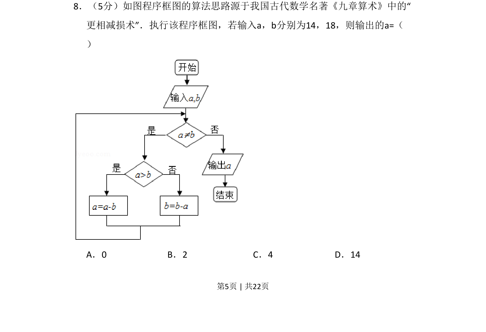
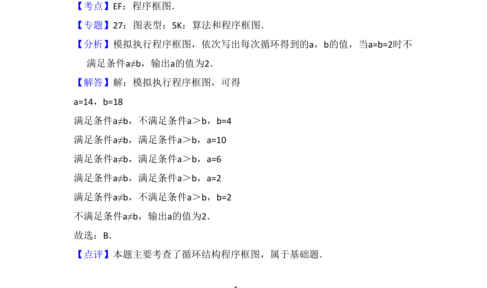

2015-文-08
考点：程序框图 更相减损术 循环结构 最大公约数
题面


摘要
该题考查以程序框图形式呈现的《九章算术》更相减损术算法，通过循环结构求两数最大公约数。
关联考点
答案与解析

📄 原 PDF 第 5 页：
素材/真题/吉林/2008-2024·（吉林）数学高考真题/2015年高考数学试卷（文）（新课标Ⅱ）（解析卷）.pdf
题干文本
8．（5分）如图程序框图的算法思路源于我国古代数学名著《九章算术》中的“ 更相减损术”．执行该程序框图，若输入a，b分别为14，18，则输出的a=（ ） A．0 B．2 C．4 D．14